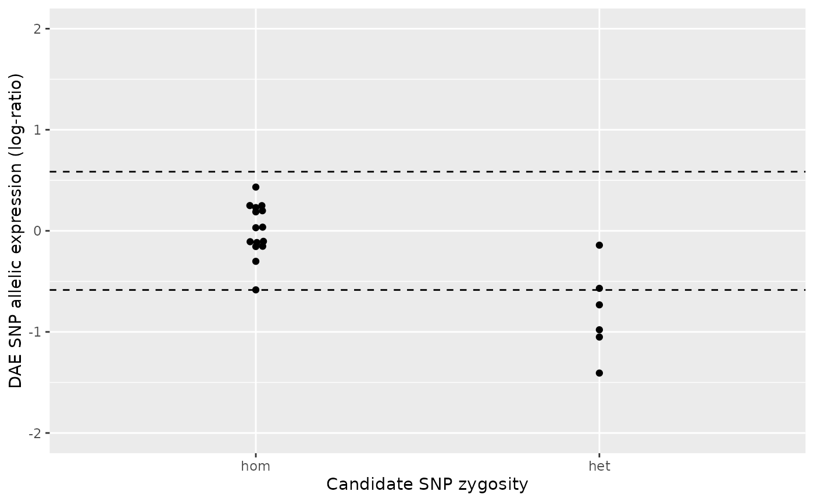

Introduction to daeqtlr
daeqtlr.RmdThe goal of daeqtlr is to provide a minimum set of routines to perform DAEQTL mapping.
In this vignette we’ll show you how to perform DAEQTL mapping using an example data set. But before that let’s recap some key concepts underlying this analysis.
Concepts
DAE SNP: SNP on which the allelic expression (AE) ratio is measured. AE is the quantitative trait used as one of the variables in the statistical association test when performing DAEQTL mapping. AE ratios are only sensible for DAE SNPs that are heterozygous.
Candidate SNP: SNP candidate for DAE quantitative trait loci (DAEQTL). These are the SNPs whose zygosity level is used as the other variable in the statistical association test.
Zygosity: degree to which both copies of a locus in two homologous chromosomes have the same genetic sequence or not. If both copies are the same, then the locus is homozygous, if they are different, the loci are heterozygous.
Data
daeqtlr is bundled with an example data set that consists of three files:
-
snp_pairs.csv: A table of SNP pairs to be tested for association. -
zygosity.csv: A table providing the zygosity levels (homozygous or heterozygous) for each SNP/biological sample combination. -
ae.csv: Allelic expression (AE) ratios for each DAE SNP / biological sample combination.
To easily read the bundled files you can use the function daeqtlr_example() to retrieve the path to each file, e.g. the path to snp_pairs.csv is:
daeqtlr_example("snp_pairs.csv")
#> [1] "/home/runner/work/_temp/Library/daeqtlr/extdata/snp_pairs.csv"To import the data into R we provide a set of read_* functions:
snp_pairs <- read_snp_pairs(file = daeqtlr_example("snp_pairs.csv"))
zygosity <- read_snp_zygosity(file = daeqtlr_example("zygosity.csv"))
ae <- read_ae_ratios(file = daeqtlr_example("ae.csv"))SNP pairs
The SNP pairs table indicates the pairs of SNPs (DAE SNP and candidate SNP) that will be tested for statistical association. Each row is for a pair. If this is not your starting point and you need to assemble this set of pairs first from a list of SNP, namely by looking for neighboring SNPs by genomic window, please read vignette("snp-pairs").
The function read_snp_pairs() expects a path to a CSV file containing five columns:
-
dae_snp: The id of the DAE SNP. -
candidate_snp: The id of the candidate DAEQTL SNP, or simply candidate SNP. -
chromosome: The chromosome name. -
dae_snp_position: The genomic position of the DAE SNP. -
candidate_snp_position: The genomic position of the candidate SNP.
These columns are expected in this order. The actual column names in the header of the file are ignored and imported into R as indicated above. read_snp_pairs() will read the file with data.table::fread() and return a data table object.
In this example data set, all SNPs have dummy identifiers as should be clear from the non-valid rs identifiers: note the inclusion of a character "X" between the "rs" prefix and the SNP number.
# First 10 pairs
snp_pairs[1:10, ]
#> dae_snp candidate_snp chromosome dae_snp_position candidate_snp_position
#> 1: rsX099 rsX008 1 180709100 180682638
#> 2: rsX099 rsX011 1 180709100 181006806
#> 3: rsX099 rsX012 1 180709100 181005024
#> 4: rsX099 rsX013 1 180709100 180709233
#> 5: rsX099 rsX015 1 180709100 181114464
#> 6: rsX099 rsX020 1 180709100 181020238
#> 7: rsX099 rsX021 1 180709100 181060085
#> 8: rsX099 rsX030 1 180709100 180744030
#> 9: rsX099 rsX031 1 180709100 181058720
#> 10: rsX099 rsX037 1 180709100 181106008
# Total number of pairs
nrow(snp_pairs)
#> [1] 200
# Chromosomes
unique(snp_pairs$chromosome)
#> [1] "1" "19" "4"There are 200 pairs, scattered across 3 chromosomes: 1, 19, and 4. This means that the DAEQTL mapping will consist (potentially) of 200 statistical tests.
Zygosity
The zygosity data table consists of the zygosity levels for the SNP / sample combination. Samples are also dummy and are therefore generically named "s01", "s02", etc. The values "hom" and "het" stand for homozygous and heterozygous, respectively.
# First 10 SNPs, first 15 samples (first column is the SNP identifier)
zygosity[1:10, 1:16]
#> snp s01 s02 s03 s04 s05 s06 s07 s08 s09 s10 s11 s12 s13 s14 s15
#> 1: rsX001 hom hom hom het hom hom hom hom hom hom hom hom het hom hom
#> 2: rsX002 hom hom hom hom hom hom hom hom hom hom het hom hom hom hom
#> 3: rsX003 het hom hom het het hom hom hom hom hom hom het hom hom hom
#> 4: rsX004 hom hom hom het het hom hom het hom hom het het hom hom hom
#> 5: rsX005 het hom het het hom het het het hom hom hom hom het hom het
#> 6: rsX006 hom het het hom hom het hom het hom het het hom het hom het
#> 7: rsX007 hom hom hom hom hom hom hom hom hom hom hom hom hom hom hom
#> 8: rsX008 hom hom hom hom hom hom het hom het het hom het het het het
#> 9: rsX009 het het hom hom hom het hom hom hom hom hom hom hom hom hom
#> 10: rsX010 het hom het het hom het het het hom hom hom hom het hom het
# Number of genotyped (determined zygosity) SNPs
nrow(zygosity)
#> [1] 66Allelic expression ratios (M-values)
The ae data table contains the \(\log_2\) of the ratio of the expression of one of the alleles over that of the other. This metric is also known as the M-value1. In the daeqtlr documentation we typically refer to M-values by log-ratios or AE ratios.
\[\text{M} = \log_2 \frac{x_{A}}{x_{B}}\]
where \(x_{A}\) and \(x_{B}\) are the allelic expression of the A and B alleles, respectively. These can be microarray intensities or sequencing counts or any other measure that bears a linear relationship with allelic expression.
An alternative metric is the Beta-value \((\beta)\), i.e. the relative expression of one allele in the total of the two alleles’ expression:
\[\beta = \frac{x_{A}}{x_{A} + x_{B}}\]
In this example data set, the ae data table comprises M-values because it has been shown to have more desirable properties for statistical testing1. However, if you find Beta-values more intuitive and hence preferable for reporting results you may use the function m2b() for conversion (and b2m() for the reverse operation).
M-values can vary between -Inf, if only one of the alleles is expressed, and Inf, if only the other allele is expressed. An M-value of zero means balanced allelic expression (equal expression of both alleles).
# Number of DAE SNPs, i.e. SNPs with measured allelic expression
nrow(ae)
#> [1] 11
# First 5 samples (first column is the SNP identifier)
ae[, 1:6]
#> dae_snp s01 s02 s03 s04 s05
#> 1: rsX019 0.34176550 0.02681199 0.09909749 -0.27985290 -0.13830710
#> 2: rsX020 2.46806900 NA 2.81560000 NA 1.17734500
#> 3: rsX031 0.43276128 1.28668700 0.60065229 0.36049254 -1.31717287
#> 4: rsX038 -0.47084220 0.34195080 0.50772590 -0.08951668 0.07892864
#> 5: rsX041 0.16917890 -0.85413270 0.35275210 2.55589100 -1.00207400
#> 6: rsX048 1.31660300 0.84591350 1.24441500 1.31580000 0.53643270
#> 7: rsX049 0.46547396 0.64117418 0.49471933 -0.24431776 0.48254007
#> 8: rsX051 0.23175630 0.51505900 NA NA 0.80177990
#> 9: rsX058 NA 1.89762256 1.38378226 -0.92397713 2.41020835
#> 10: rsX059 0.11945310 0.65581140 NA 0.50474010 0.48633720
#> 11: rsX060 0.07940053 -0.61600390 -0.73958170 1.01771300 -0.31974190DAEQTL mapping
To perform DAEQTL mapping you use the function daeqtl_mapping(). The P-value associated with the statistical association will be appended as a new column to the data table snp_pairs by reference, i.e. the snp_pairs is changed in-place, no extra copy is created. Here we associate a new variable mapping_results with the output of daeqtl_mapping() but it refers to the same data in memory as the new updated snp_pairs data table.
# `snp_pairs` is updated by reference, so `snp_pairs` and `mapping_results`
# refer to the same object in memory.
mapping_results <- daeqtl_mapping(snp_pairs = snp_pairs,
zygosity = zygosity,
ae = ae)
# Omiting here the columns `dae_snp_position` and `candidate_snp_position`
# and showing only the first 5 pairs for brevity.
mapping_results[1:5, -c('dae_snp_position', 'candidate_snp_position')]
#> dae_snp candidate_snp chromosome pvalue case
#> 1: rsX019 rsX002 19 0.8331668 4
#> 2: rsX019 rsX003 19 0.1348031 4
#> 3: rsX019 rsX005 19 0.9280741 4
#> 4: rsX019 rsX010 19 0.9280741 4
#> 5: rsX019 rsX014 19 0.1348031 4Now let us sort by ascending P value to check the pairs that show the most strong evidence of association.
mapping_results %>%
dplyr::select(-c('dae_snp_position', 'candidate_snp_position')) %>%
dplyr::arrange(pvalue) %>%
dplyr::slice_head(n = 10)
#> dae_snp candidate_snp chromosome pvalue case
#> 1: rsX059 rsX057 4 0.003857293 3
#> 2: rsX031 rsX062 1 0.004554027 4
#> 3: rsX031 rsX039 1 0.011581429 4
#> 4: rsX038 rsX035 4 0.019107190 4
#> 5: rsX041 rsX032 4 0.033376508 4
#> 6: rsX058 rsX057 4 0.038642034 4
#> 7: rsX058 rsX059 4 0.038642034 4
#> 8: rsX041 rsX009 4 0.041884336 4
#> 9: rsX051 rsX023 19 0.046695338 4
#> 10: rsX060 rsX003 19 0.059058229 3rsX059 and rsX057
TODO: Explanation of case 3.
# DAEQTL plot for the pair rsX059/rsX057
daeqtl_plot(
ae_hom = ae_hom('rsX059', 'rsX057', zygosity, ae),
ae_het = ae_het('rsX059', 'rsX057', zygosity, ae)
)rsX031 and rsX062
TODO: Explanation of case 4.
# DAEQTL plot for the pair rsX031/rsX062
daeqtl_plot(
ae_hom = ae_hom('rsX031', 'rsX062', zygosity, ae),
ae_het = ae_het('rsX031', 'rsX062', zygosity, ae)
)